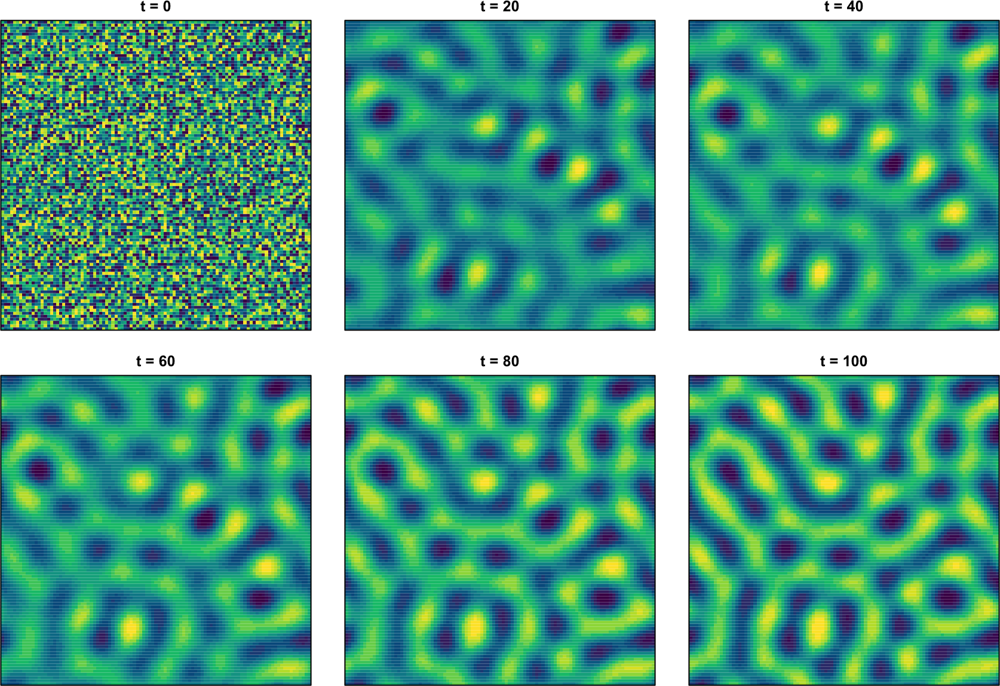
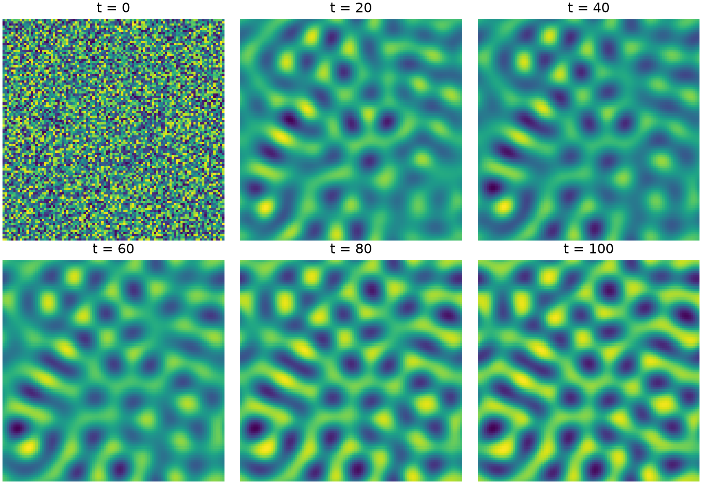
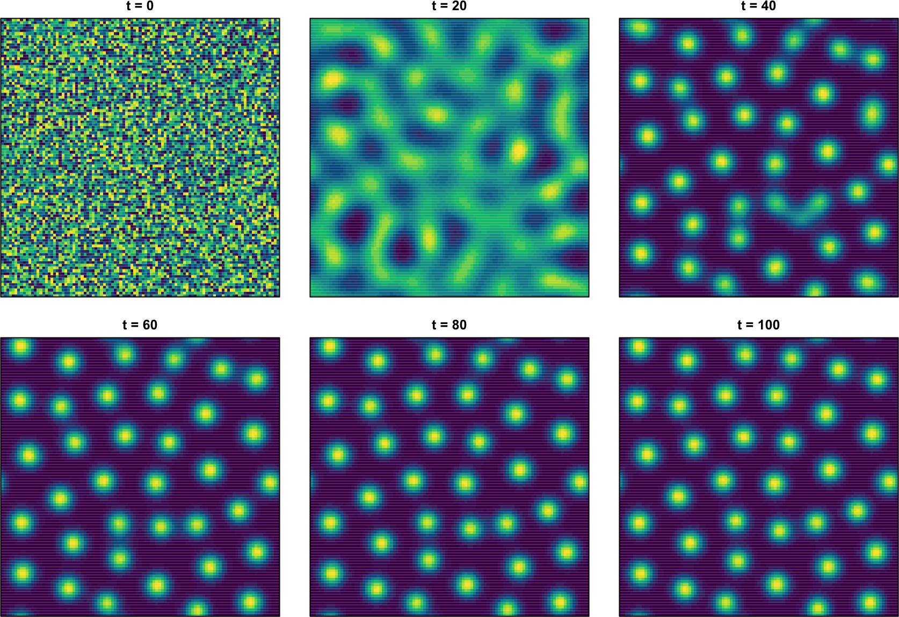
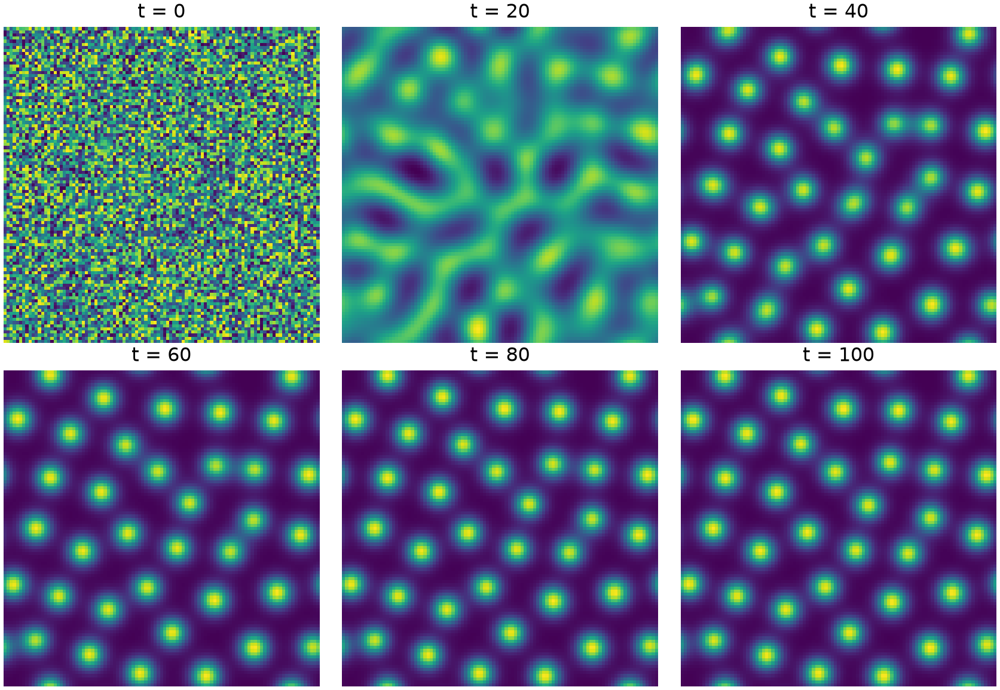

# periodic 2D Laplacian, five-point stencil (wraps in both directions)
lap2d <- function(M, n)
rbind(M[-1, ], M[1, ]) + rbind(M[n, ], M[-n, ]) +
cbind(M[, -1], M[, 1]) + cbind(M[, n], M[, -n]) - 4 * M
# one explicit finite-difference solve of a 2-component reaction-diffusion system in 2D
pde_fd_rd_2d <- function(reaction, D, u, v, n, dX, dt, t.total, ...) {
nt <- as.integer(t.total / dt)
fu <- D[1] / dX^2 * dt; fv <- D[2] / dX^2 * dt
for (step in seq_len(nt)) {
r <- reaction(u, v, ...) # reaction on the whole grid at once
u_new <- u + r[[1]] * dt + fu * lap2d(u, n)
v_new <- v + r[[2]] * dt + fv * lap2d(v, n)
u <- u_new; v <- v_new
}
list(u = u, v = v)
}7E. Two-dimensional reaction-diffusion
Part 7C followed two-component Turing systems on a line. The same diffusion-driven instability acts in two spatial dimensions, where it produces the spots, stripes, and labyrinths seen on animal coats and many other biological surfaces (Turing 1952). Here we extend the Gierer-Meinhardt models of Part 7C (Gierer and Meinhardt 1972) from a one-dimensional grid to a two-dimensional lattice, keeping the same reaction terms but now letting each species diffuse in both \(X\) and \(Y\).
For a two-component system with fields \(u(X, Y, t)\) and \(v(X, Y, t)\), the reaction-diffusion equations are
\[ \begin{aligned} \frac{\partial u}{\partial t} &= f(u, v) + D_u \left( \frac{\partial^2 u}{\partial X^2} + \frac{\partial^2 u}{\partial Y^2} \right) , \\ \frac{\partial v}{\partial t} &= g(u, v) + D_v \left( \frac{\partial^2 v}{\partial X^2} + \frac{\partial^2 v}{\partial Y^2} \right) , \end{aligned} \tag{1} \]
with reaction terms \(f\), \(g\) and diffusion constants \(D_u\), \(D_v\). We discretize the two-dimensional Laplacian with the five-point stencil of Part 7D, giving the explicit update
\[ \begin{aligned} u_{i,j}^{n+1} = u_{i,j}^n &+ f\,\Delta t \\ &+ D_u \frac{\Delta t}{\Delta X^2}\left( u_{i+1,j}^n + u_{i-1,j}^n + u_{i,j+1}^n + u_{i,j-1}^n - 4 u_{i,j}^n \right) , \end{aligned} \tag{2} \]
and the same for \(v\) with \(D_v\). As in Part 7C we use a periodic boundary, wrapping the lattice in both directions so the pattern tiles the plane without an edge.
7E.1 A two-dimensional integrator
The one-dimensional integrator of Part 7C called the reaction term at each grid point in turn. In two dimensions that would be slow, so we exploit the fact that the reaction is local (the value of \(f\) and \(g\) at a point depends only on \(u\) and \(v\) at that point) and evaluate it on the whole grid at once. The diffusion term is the periodic five-point Laplacian, computed by shifting the array in each direction and wrapping the edges.
One caveat specific to two dimensions: each point now has four neighbors instead of two, so the explicit scheme is stable only when \(D\,\Delta t / \Delta X^2 < 1/4\). We therefore use a smaller time step, \(\Delta t = 0.005\), than the 1D runs of Part 7C.
NoteRecipe 7E.1.1
Objective. Build a two-component reaction-diffusion integrator on a 2D grid.
Model. A generic two-component 2D reaction-diffusion system, du/dt = f(u, v) + Du*(d2u/dX2 + d2u/dY2), dv/dt = g(u, v) + Dv*(d2v/dX2 + d2v/dY2).
Method. An explicit forward-time centered-space 2D integrator with periodic boundaries, the five-point Laplacian computed by whole-grid array shifts.
Test. The generic solver with a run-in-blocks driver; nearly uniform initial u = v = 1 with +-0.1 noise (seed 10); 2D stability needs D*dt/dX^2 < 1/4, so dt = 0.005.
Show. u and v advanced on the 2D grid (exercised in 7E.2).
Verification. The vectorized 2D integrator evaluates the reaction on the whole grid at once, running faster than a point-by-point 1D approach.
R implementation
Python implementation
import numpy as np
import matplotlib.pyplot as plt
# periodic 2D Laplacian, five-point stencil (wraps in both directions)
def lap2d(M):
return np.roll(M, 1, 0) + np.roll(M, -1, 0) + np.roll(M, 1, 1) + np.roll(M, -1, 1) - 4 * M
# one explicit finite-difference solve of a 2-component reaction-diffusion system in 2D
def pde_fd_rd_2d(reaction, D, u, v, n, dX, dt, t_total, **kw):
nt = int(t_total / dt); fu, fv = D[0] / dX**2 * dt, D[1] / dX**2 * dt
for _ in range(nt):
ru, rv = reaction(u, v, **kw) # reaction on the whole grid at once
u, v = u + ru * dt + fu * lap2d(u), v + rv * dt + fv * lap2d(v)
return u, vTo watch a pattern develop, we run the integrator in successive blocks of time, starting from a nearly uniform state \(u = v \approx 1\) with a small random perturbation, and display the \(u\) field after each block. The helper below wraps this loop and draws the six snapshots on a shared grid.
R implementation
run_rd_2d <- function(reaction, D, mu, n, dX, dt, block, nplot, seed = 10) {
set.seed(seed)
u <- matrix(1 + runif(n * n, -0.1, 0.1), n, n)
v <- matrix(1 + runif(n * n, -0.1, 0.1), n, n)
vir <- hcl.colors(20, "viridis")
par(mfrow = c(2, 3), pty = "s", mar = c(1, 1, 2, 1))
image(1:n, 1:n, u, col = vir, axes = FALSE, main = "t = 0"); box()
for (i in 1:(nplot - 1)) {
r <- pde_fd_rd_2d(reaction, D, u, v, n, dX, dt, block, mu = mu)
u <- r$u; v <- r$v
image(1:n, 1:n, u, col = vir, axes = FALSE, main = paste("t =", i * block)); box()
}
}Python implementation
def run_rd_2d(reaction, D, mu, n, dX, dt, block, nplot, seed=10):
rng = np.random.default_rng(seed)
u = 1 + rng.uniform(-0.1, 0.1, (n, n)); v = 1 + rng.uniform(-0.1, 0.1, (n, n))
fig, axs = plt.subplots(2, 3, figsize=(9, 6.2))
for k, ax in enumerate(axs.flat):
if k > 0:
u, v = pde_fd_rd_2d(reaction, D, u, v, n, dX, dt, block, mu=mu)
ax.imshow(u.T, origin="lower", cmap="viridis", aspect="equal")
ax.set_title(f"t = {k * block}"); ax.axis("off")
plt.tight_layout(); plt.show()7E.2 A substrate-depletion model
The substrate-depletion model of Part 7C keeps \(D_u = d\), \(D_v = 1\), and
\[ \begin{aligned} f(u, v) &= u^2 v - u , \\ g(u, v) &= \mu (1 - u^2 v) , \end{aligned} \tag{3} \]
with \(v\) a fast-diffusing substrate that activates \(u\) and is depleted by it. On the line this gave a periodic array of peaks. On the plane, with \(d = 0.1\) and \(\mu = 1.5\), the same instability grows into a labyrinth of stripes.
NoteRecipe 7E.2.1
Objective. Grow a 2D Turing pattern from a substrate-depletion model.
Model. The 2D Gierer-Meinhardt substrate-depletion model, f(u, v) = u^2*v - u, g(u, v) = mu*(1 - u^2*v), with Du = d, Dv = 1.
Method. The 2D finite-difference reaction-diffusion integrator (from 7E.1), run in successive blocks.
Test. A 101x101 grid, dX = 0.2, dt = 0.005, d = 0.1, mu = 1.5; nearly uniform initial u = v = 1 with +-0.1 noise (seed 10).
Show. A 2D image of the u field forming a labyrinth of stripes.
Verification. The instability grows from near-uniform noise into a coarsening labyrinth of winding stripes.
R implementation
asdm <- function(u, v, mu) { u2v <- u * u * v; list(u2v - u, mu * (1 - u2v)) }
n <- 101; dX <- 0.2; dt <- 0.005; D <- c(0.1, 1); mu <- 1.5
run_rd_2d(asdm, D, mu, n, dX, dt, block = 20, nplot = 6)
Python implementation
def asdm(u, v, mu):
u2v = u * u * v
return u2v - u, mu * (1 - u2v)
n = 101; dX = 0.2; dt = 0.005; D = np.array([0.1, 1.0]); mu = 1.5
run_rd_2d(asdm, D, mu, n, dX, dt, block=20, nplot=6)
The nearly uniform initial field first develops fine ripples, which coarsen and link up into winding stripes. The stripe width is set by the same fastest-growing mode that fixed the peak spacing in one dimension. Each color scale is set per snapshot, so the early panels show structure that is still very small in amplitude.
7E.3 An activator-inhibitor model
Switching the reaction terms to the activator-inhibitor model, again with \(D_u = d\), \(D_v = 1\) and
\[ \begin{aligned} f(u, v) &= u^2 / v - u , \\ g(u, v) &= \mu (u^2 - v) , \end{aligned} \tag{4} \]
gives a different pattern from the same initial conditions and the same parameters.
NoteRecipe 7E.3.1
Objective. Grow a 2D Turing pattern from an activator-inhibitor model and compare its morphology to stripes.
Model. The 2D Gierer-Meinhardt activator-inhibitor model, f(u, v) = u^2/v - u, g(u, v) = mu*(u^2 - v), with Du = d, Dv = 1.
Method. The 2D finite-difference reaction-diffusion integrator (from 7E.1), run in successive blocks.
Test. A 101x101 grid, dX = 0.2, dt = 0.005, d = 0.1, mu = 1.5; nearly uniform initial u = v = 1 with +-0.1 noise (seed 10); integrate to t = 100 in successive blocks of 20 (the same initial condition and run length as 7E.2).
Show. A 2D image of the u field forming an array of spots.
Verification. From the same start and parameters as the substrate-depletion case, the activator-inhibitor kinetics instead settle into a regular array of spots, so the reaction kinetics select stripes versus spots.
R implementation
aim <- function(u, v, mu) list(u^2 / v - u, mu * u^2 - v)
run_rd_2d(aim, D, mu, n, dX, dt, block = 20, nplot = 6)
Python implementation
def aim(u, v, mu):
return u**2 / v - u, mu * u**2 - v
run_rd_2d(aim, D, mu, n, dX, dt, block=20, nplot=6)
Instead of stripes, the activator-inhibitor model settles into a regular array of spots, with high-\(u\) peaks on a low-\(u\) background. The two Gierer-Meinhardt variants thus select two of the classic two-dimensional Turing morphologies, stripes and spots, from the same random start. Which one appears is a property of the reaction kinetics, not of the initial condition: as in the earlier chapters, the R and Python runs use independent random perturbations and so produce different specific realizations of the same pattern type.